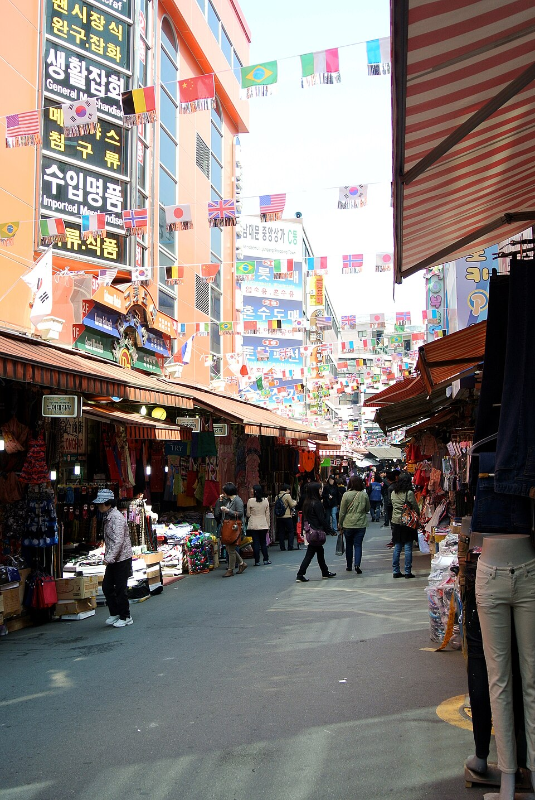

ซีรีส์ 'ดอกุเมนทารี 3 วัน' ของ KBS: บ้านแพกซา ตลาดเต็นท์ยงซาน และตลาดนัมแดมุน
สามสถานที่ในโซลที่เคยปรากฏใน 'ดอกุเมนทารี 3 วัน' ของ KBS ได้แก่ หมู่บ้านแพกซา หมู่บ้านบนเนินที่ถูกเรียกว่า 'หมู่บ้านพระจันทร์' แห่งสุดท้ายของเมือง กลุ่มร้านเต็นท์ดื่มที่ยงซานที่ขึ้นชื่อเรื่องตีนไก่เผ็ดและโซจู และตลาดนัมแดมุนที่มีโฮต็อกและของกินข้างทาง
มุมอีกด้านของโซลผ่านเลนส์สารคดี
โซลคือเมืองหลวงของเกาหลีใต้ เมืองที่พระราชวังโบราณ ตลาดดั้งเดิม แม่น้ำฮัน และวิวกลางคืนแสนสวย อยู่บนแผนที่เดียวกัน เมืองนี้มีอาหารที่คนรู้จักกันดี เช่น ซัมกยอบซัล (หมูสามชั้นย่าง) บินแดตต็อก และยุกฮเว ที่ตลาดควังจัง รวมถึงกอปชัง (ไส้ย่าง) และรามยอนซีฟู้ดที่โนรยังจิน อย่างไรก็ตาม คู่มือนี้พาไปตามซีรีส์ยาวนานของ KBS อย่าง ดอกุเมนทารี 3 วัน ซึ่งใช้เวลา 72 ชั่วโมงในแต่ละสถานที่ ไปยังสามจุดในโซลที่ชีวิตประจำวันและความอบอุ่นของผู้คนเป็นจุดเด่น
สถานที่
หมู่บ้านแพกซา ซงกเย-dong
📍 หมู่บ้านแพกซา · Naver Map · Google Maps
มักถูกเรียกว่า 'หมู่บ้านพระจันทร์' แห่งสุดท้ายของโซล เป็นชุมชนแออัดบนเนินเขาที่เคยอยู่ใกล้ดวงจันทร์ ตอนที่ออกอากาศในเดือนมกราคม 2011 ติดตามชีวิตของชาวบ้านในฤดูหนาวที่หนาวจัด ขณะที่พวกเขารวมตัวกันรอบเตาถ่านอัดแท่งเพื่อให้ความอบอุ่นแก่กันและกัน สถานที่นี้เป็นเหมือนหน้าต่างสู่อดีตของโซลมากกว่าจุดแวะกินอาหาร เป็นย่านที่มีคนอาศัยอยู่จริง หากไปเยือน โปรดเดินอย่างเงียบ ๆ และเคารพชาวบ้าน
หมู่บ้านพojangmacha ยงซาน
📍 หมู่บ้านพojangmacha ยงซาน · Naver Map · Google Maps
กลุ่มพojangmacha หรือร้านเต็นท์ข้างถนนของเกาหลี ตั้งอยู่ท่ามกลางตึกสำนักงาน จุดเด่นคือของกินคู่เหล้าแบบดั้งเดิม เช่น ตีนไก่เผ็ด จิบคู่กับโซจู ตอนที่ออกอากาศในเดือนพฤศจิกายน 2013 ชื่อ 'แก้วแห่งความปลอบโยน: 72 ชั่วโมงที่หมู่บ้านพojangmacha ยงซาน' บันทึกภาพคนทำงานที่ผ่อนคลายและหาความสงบเล็ก ๆ ในเต็นท์เหล่านี้เมื่อสิ้นวัน
ตลาดนัมแดมุน

📍 ตลาดนัมแดมุน · Naver Map · Google Maps
ตลาดดั้งเดิมที่มีประวัติกว่า 600 ปี และมีร้านค้ามากกว่า 10,000 ร้าน มาเดินชมร้านค้า แล้วแวะชิมโฮต็อก (แพนเค้กไส้หวาน) และของกินข้างทางอื่น ๆ ตอนที่ออกอากาศในเดือนธันวาคม 2018 ใช้เวลา 72 ชั่วโมงท่ามกลางร้านค้าประมาณ 12,000 ร้าน เผยให้เห็นอาหารและสิ่งที่น่าชมหลากหลายของตลาด
การเดินทางและการวางแผน
ตลาดนัมแดมุนเหมาะกับการไปช่วงกลางวัน เดินดูร้านและลิ้มรสของว่างข้างทาง ส่วนร้านเต็นท์ยงซานเหมาะกับช่วงเย็นที่ตีนไก่และโซจูเข้ากันที่สุด การไปตามลำดับนี้ทำให้วันหนึ่งไม่เหนื่อยเกินไป หมู่บ้านแพกซาอยู่ทางตะวันออกเฉียงเหนือของโซล จึงสบายกว่าหากจัดเวลาครึ่งวันแยกต่างหาก โปรดจำไว้ว่าตอนเหล่านี้ออกอากาศระหว่างปี 2011 ถึง 2018 ดังนั้นสถานการณ์อาจเปลี่ยนไปแล้วตั้งแต่ถ่ายทำ ควรตรวจสอบข้อมูลปัจจุบันก่อนออกเดินทาง
ร้านและสถานที่ในวิดีโอ
- หมู่บ้านแพกซา (ซงกเย-ดง) (중계동 백사마을) ชุมชนแออัดบนเนินเขาแห่งสุดท้ายของโซล ชีวิตฤดูหนาวกับเตาถ่านอัดแท่ง Naver Map Google Maps
- หมู่บ้านพojangmacha ยงซาน (용산 포장마차촌) ของว่างจากร้านเต็นท์ข้างถนน ตีนไก่เผ็ดคู่กับโซจู Naver Map Google Maps
- ตลาดนัมแดมุน (남대문시장) ตลาดดั้งเดิมที่มีร้านค้ามากกว่า 10,000 ร้าน โฮต็อกและของกินข้างทาง Naver Map Google Maps
ที่ตั้งและเวลาเปิดอาจเปลี่ยนแปลง โปรดตรวจสอบแผนที่ก่อนไป
วิดีโอที่เกี่ยวข้อง


บทความอื่น
- จอนนัมบนจอ: เกาะห่างไกลของซินันและตลาดรุ่งอรุณจากสารคดี KBS 'Documentary 3 Days'
- ถ่ายทอดผ่านจอที่กังวอน: ท่าเรือโดยสารนานาชาติซokโช และตลาดห้าวันจองซอน
- ตรอกในจอที่แดกู: ตรอกมอเตอร์ไซค์และถนนปูซอง-โร ร้านเต็นท์ปิ้งบุลโกกิถ่านแกลบ
- สถานที่จากวิดีโอในจอนนัม: จากยอซูสู่ซุนชอนและโบซอง
- ภาพรวมอาหารและสถานที่เที่ยวจอนบุก จากคลิปท่องเที่ยว: ข้าวยำ ตลาด และที่พักฮันอกในจอนจู
- ภาพรวมกยองบุก จากวิดีโอ: คาเฟ่ ที่พักฮันอก และมรดกซิลลาในกยองจู